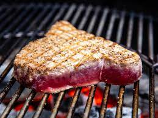

HOME
Grilled Tuna Recipe

Description:
Fresh tuna steaks should be easy to come by for the most of the year. Choose your flesh carefully: a reddish tone is acceptable, but dark patches or streaks should be avoided. The flesh is dry, as it is with any huge ocean fish. Avoid overcooking by marinating with oil. Tuna should be cooked medium rare, therefore time is crucial. Use a kitchen timer to keep track of how long you've been cooking.
Ingredients:
- 4 (6 ounce) albacore tuna steaks, 1 inch thick
- 3 tablespoons extra virgin olive oil
- Salt and ground black pepper to taste
- 1 lime, juiced
- ½ cup hickory wood chips, soaked
Steps:
-
In a large resealable plastic bag, combine tuna steaks and olive oil.
Refrigerate for 1 hour after sealing.
-
Preheat the grill to medium-high temperature.
To add flavor to the coals, toss a handful of hickory or mesquite wood chips over them while they're very hot.
-
Grease the grill grate lightly.
Season tuna with salt and pepper and cook for 6 minutes on a hot grill, rotating once.
Drizzle with freshly squeezed lime juice and transfer to a serving plate.
Serve right away.